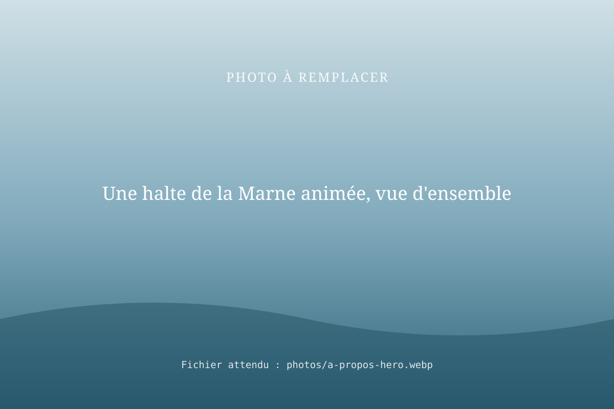
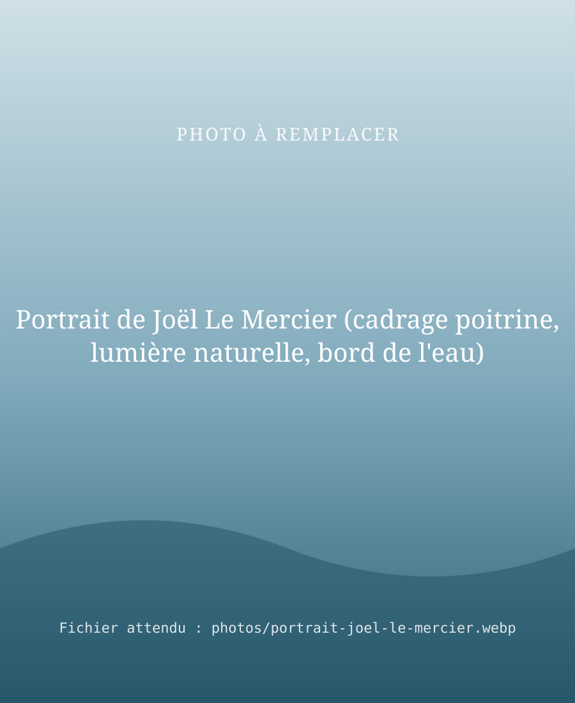

À propos
RivesEnRêves, bâtisseur de vie au bord de l'eau
RivesEnRêves est une entreprise fluviale fondée par Joël Le Mercier, qui propose des balades en bateau, des services aux plaisanciers, des études de report modal vers le fluvial financées par VNF et des services aux professionnels, et du conseil en développement du tourisme fluvial aux administrations.
Son territoire : le bassin de la Seine (Seine amont, Seine aval, canaux parisiens, Marne) et le Canal de Bourgogne.

Notre histoire : des berges vides aux haltes vivantes
L'aventure commence en 2010, quand Joël Le Mercier lance le concept RivesEnRêves : des balades sur mesure et des gîtes nautiques. D'abord exercée en auto-entreprise, l'activité est transférée le 1er juin 2021 à la société RivesEnRêves (SASU), immatriculée en janvier 2022.
De 2019 à 2025, RivesEnRêves a exploité 4 haltes fluviales sur la Marne, en collaboration avec Coulommiers Pays de Brie Tourisme :
- La Ferté-sous-Jouarre (2 haltes) ;
- Saint-Jean-les-Deux-Jumeaux ;
- Nanteuil-sur-Marne.
Leur point commun : il n'y avait rien à l'origine. Ni ponton, ni accueil, ni activité.
L'entreprise a créé l'activité de toutes pièces :
- Aménager : rendre les berges accessibles, installer de quoi amarrer et accueillir.
- Accueillir les plaisanciers : leur offrir une escale sûre, des services et des conseils.
- Animer les berges : faire venir le public, créer des rendez-vous au bord de l'eau.
C'est là que s'est forgé notre savoir-faire de développeur de sites fluviaux : voir le potentiel d'une berge, la rendre accessible et la faire vivre. Ce savoir-faire nourrit aujourd'hui nos quatre métiers : les balades et le gîte nautique, les services aux plaisanciers, les solutions pour les professionnels et le conseil aux collectivités.
[À COMPLÉTER : anecdotes marquantes]
Nos repères
| Repère | Ce que nous avons fait |
|---|---|
| Depuis 2010 | Concept RivesEnRêves : balades sur mesure et gîtes nautiques ; auto-entreprise, puis société (SASU) depuis 2021. |
| Territoire | Bassin de la Seine (Seine amont, Seine aval, canaux parisiens, Marne) et Canal de Bourgogne. |
| Marne, 2019-2025 | 4 haltes fluviales exploitées sur la Marne de 2019 à 2025 en collaboration avec Coulommiers Pays de Brie Tourisme, dont 2 à La Ferté-sous-Jouarre, créées sur des sites où il n'y avait rien à l'origine : La Ferté-sous-Jouarre (2 haltes), Saint-Jean-les-Deux-Jumeaux et Nanteuil-sur-Marne. |
| Canal de Bourgogne | La Billebaude : bateau à passagers trouvé aux Pays-Bas et acheminé jusqu'à Pouilly-en-Auxois pour la Communauté de communes de Pouilly-Bligny. |
| VNF | Mission de conseil en logistique fluviale ; études de report modal vers le fluvial financées par VNF. |
| Fublaines | Site en bord de Marne (Seine-et-Marne), occupé dans le cadre d'une sous-occupation de la convention de Valfrance : notre base d'activité. |
| Interventions | Renflouement d'un bateau à l'aide de ballons de flottaison ; découpe de bateaux. |
Fiche d'identité
Informations issues de l'extrait Kbis (Registre du commerce et des sociétés, greffe du tribunal de commerce de Meaux).
| Dénomination | RivesEnRêves |
|---|---|
| Nom commercial | Rives en Rêves |
| Forme juridique | Société par actions simplifiée à associé unique (SASU), au capital de 1 500 € |
| Président | Joël Le Mercier |
| Activités | Transport fluvial de passagers, gîtes nautiques, services aux plaisanciers, gestion technique et commerciale de ports et de haltes de plaisance, armement fluvial |
| Origine | Activité lancée en 2010 en auto-entreprise, transférée à la société le 1er juin 2021 |
| Immatriculation | 21 janvier 2022 · RCS Meaux 909 449 548 |
| SIRET | 909 449 548 00025 |
| Siège | Poincy (Seine-et-Marne) · adresse complète dans les mentions légales |

Le fondateur
Joël Le Mercier, fondateur de RivesEnRêves
Gestionnaire, maître de port et commandant de bord, Joël Le Mercier est le fondateur de RivesEnRêves. Passionné par le fluvial et le côtier depuis ses 16 ans, il a navigué sur la quasi-totalité des fleuves et canaux français, sur une très grande diversité de bateaux. Homme de terrain, il a fait de la voie d'eau à la fois son métier et son engagement : faire en sorte que les rivières et les canaux soient habités, utilisés et aimés.
Un bâtisseur de haltes fluviales
Sur la Marne, il a conçu, aménagé et exploité quatre haltes fluviales entre 2019 et 2025, en collaboration avec Coulommiers Pays de Brie Tourisme : deux à La Ferté-sous-Jouarre, une à Saint-Jean-les-Deux-Jumeaux et une à Nanteuil-sur-Marne, là où il n'existait rien. Il y a accueilli des plaisanciers, organisé la vie des berges et appris, saison après saison, ce qui fait réussir un site fluvial.
Une expertise de terrain
- Exploitation de sites fluviaux et accueil du public ;
- Navigation et convoyage de bateaux, en poussage comme à couple : depuis 2012, plusieurs convoyages à couple jusqu'à 100 tonnes ;
- Interventions sur l'eau, dont plusieurs en appui des pompiers ;
- Réglementation fluviale : maîtrise des règlements de police de la navigation (RGP, RPP) ;
- Travaux sur bateaux : renflouement à l'aide de ballons de flottaison, découpe de bateaux ;
- Relations avec les gestionnaires de voies navigables et les acteurs portuaires, dont VNF.
Une posture de conseil
Cette expérience d'exploitant, Joël Le Mercier la met au service des autres : il a mené une mission de conseil en logistique fluviale pour VNF, réalise des études de report modal financées par VNF et accompagne les collectivités, comme la Communauté de communes de Pouilly-Bligny, dans leurs projets de tourisme fluvial.
Parcours
Avant de se consacrer à la voie d'eau, Joël Le Mercier a mené une première carrière de dirigeant et créateur d'entreprises dans l'informatique et le numérique : directeur d'agence, responsable qualité, directeur technique chez GDP – France Télécom, puis président fondateur de Synaptique Europ (société de conseil technologique comptant près de 300 ingénieurs dans 11 pays), d'iEurop et de WhiterNet. Il en a gardé le sens de la gestion, de l'organisation et du pilotage de projets.
En 2010, il lance le concept RivesEnRêves, d'abord en auto-entreprise, puis en société depuis 2021.
Qualifications
- Permis fluvial et permis mer côtier (2007), extension grande plaisance (2011)
- Certificat restreint de radiotéléphoniste (CRR) maritime et fluvial (2010)
- Secourisme : PSC1 (2018)
- Formation à la gestion de crise et de panique
- BTS Gestion de production et gestion de la qualité ; formation d'ingénieur au CNAM
Vision et valeurs
- Le terrain d'abord : on ne conseille bien que ce qu'on a soi-même fait.
- La voie d'eau comme avenir : pour le tourisme, pour la logistique, pour les territoires.
- La parole tenue : un interlocuteur unique, du premier appel au résultat.
« [À COMPLÉTER : citation personnelle de Joël Le Mercier] »Joël Le Mercier, président et fondateur de RivesEnRêves